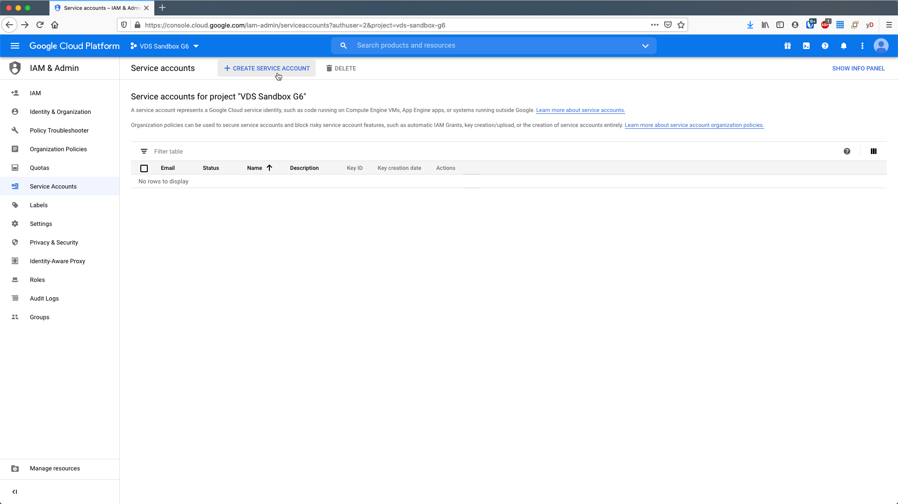
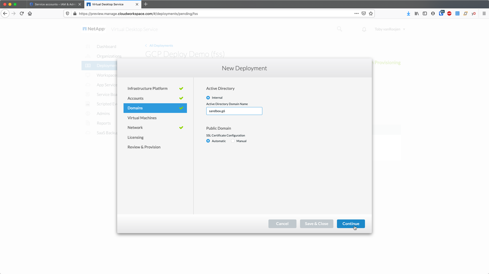
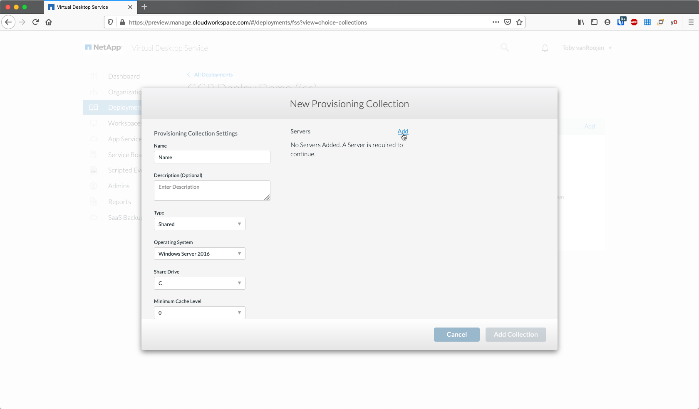
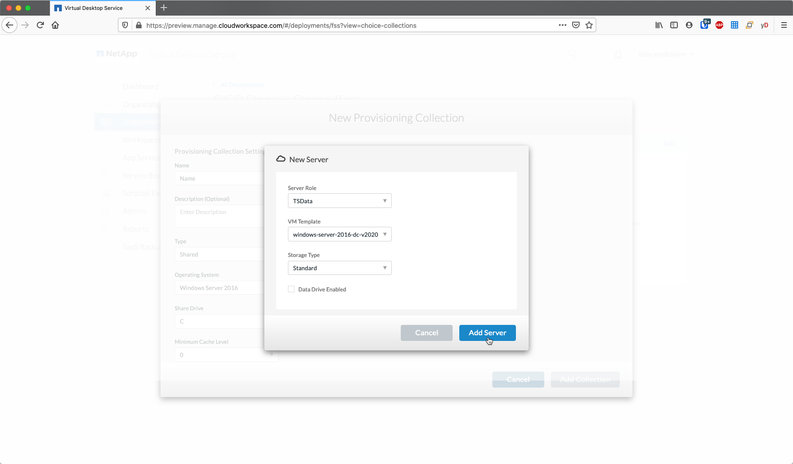

RDS Deployment Guide for Google Cloud (GCP)
Contributors
 Download PDF of this page
Download PDF of this page
Overview
This guide will provide the step by step instructions to create a Remote Desktop Service (RDS) deployment utilizing NetApp Virtual Desktop Service (VDS) in Google Cloud.
This Proof of Concept (POC) guide is designed to help you quickly deploy and configure RDS in your own test GCP Project.
Production deployments, especially into existing AD environments are very common however that process is not considered in this POC Guide. Complex POCs and production deployments should be initiated with the NetApp VDS Sales/Services teams and not performed in a self-service fashion.
This POC document will take you thru the entire RDS deployment and provide a brief tour of the major areas of post-deployment configuration available in the VDS platform. Once completed you’ll have a fully deployed and functional RDS environment, complete with session hosts, applications and users. Optionally you’ll have the option to configure automated application delivery, security groups, file share permissions, Cloud Backup, intelligent cost optimization. VDS deploys a set of best practice settings via GPO. Instructions on how to optionally disable those controls are also included, in the event your POC needs to have no security controls, similar to an unmanaged local device environment.
Deployment architecture

RDS basics
VDS deploys a fully functional RDS environment, with all necessary supporting services from scratch. This functionality can include:
-
RDS gateway server(s)
-
Web client access server(s)
-
Domain controller server(s)
-
RDS licensing service
-
ThinPrint licensing service
-
Filezilla FTPS server service
Guide scope
This guide walks you through the deployment of RDS using NetApp VDS technology from the perspective of a GCP and VDS administrator. You bring the GCP project with zero pre-configuration and this guide helps you setup RDS end-to-end.
Create service account
-
In GCP, navigate to (or search for) IAM & Admin > Service Accounts
-
Click + CREATE SERVICE ACCOUNT

-
Enter a unique service account name, click CREATE. Make a note of the service account’s email address which will be used in a later step.
-
Select the Owner role for the service account, click CONTINUE
-
No changes are necessary on the next page (Grant users access to this service account(optional)), click DONE
-
From the Service accounts page, click the action menu and select Create key
-
Select P12, click CREATE
-
Download the .P12 file and save it to your computer. Leaved the Private key password unchanged.
Enable Google compute API
-
In GCP, navigate to (or search for) APIs & Services > Library
-
In the GCP API Library, navigate to (or search for) Compute Engine API, Click ENABLE
Create new VDS deployment
-
In VDS, navigate to Deployments and click + New Deployment
-
Enter a name for the deployment
-
Select Google Cloud Platform

Infrastructure platform
-
Enter the Project ID and OAuth Email address. Upload the .P12 file from earlier in this guide and select the appropriate zone for this deployment. Click Test to confirm the entries are correct and the appropriate permissions have been set.
The OAuth email is the address of the service account created earlier in this guide. -
Once confirmed, click Continue
Accounts
Local VM accounts
-
Provide a password for the local Administrator account. Document this password for later use.
-
Provide a password for the SQL SA account. Document this password for later use.
| Password complexity requires an 8 character minimum with 3 of the 4 following character types: uppercase, lowercase, number, special character |
SMTP account
VDS can send email notifications via custom SMTP settings or the built-in SMTP service can be used by selecting Automatic.
-
Enter an email address to be used as the From address when email notification are sent by VDS. no-reply@<your-domain>.com is a common format.
-
Enter an email address where success reports should be directed.
-
Enter an email address where failure reports should be directed.
Level 3 technicians
Level 3 technician accounts (aka. .tech accounts) are domain-level accounts for VDS admins to use when performing administrative tasks on the VMs in the VDS environment. Additional accounts can be created on this step and/or later.
-
Enter the username and password for the Level 3 admin account(s). ".tech" will be appended to the user name you enter to help differentiate between end users and tech accounts. Document these credentials for later use.
The best practice is to define named accounts for all VDS admins that should have domain-level credentials to the environment. VDS admins without this type of account can still have VM-level admin access via the Connect to server functionality built into VDS.
Domains
Active directory
Enter the desired AD domain name.
Public domain
External access is secured via an SSL certificate. This can be customized with your own domain and a self-managed SSL certificate. Alternatively, selecting Automatic allows VDS to manage the SSl certificate including an automatic 90-day refresh of the certificate. When using automatic, each deployment uses a unique sub-domain of cloudworkspace.app.

Virtual machines
For RDS deployments the required components such as domain controllers, RDS brokers and RDS gateways need to be installed on platform server(s). In production these services should be run on dedicated and redundant virtual machines. For proof of concept deployments a single VM can be used to host all of these services.
Platform VM configuration
Single virtual machine
This is the recommended selection for POC deployments. In a Single virtual machine deployment the following roles are all hosted on a single VM:
-
CW Manager
-
HTML5 Gateway
-
RDS Gateway
-
Remote App
-
FTPS Server (Optional)
-
Domain Controller
The maximum advised user count for RDS use cases in this configuration is 100 users. Load balanced RDS/HTML5 gateways are not an option in this configuration, limiting the redundancy and options for increasing scale in the future.
| If this environment is being designed for multi-tenancy, a Single virtual machine configuration is not supported. |
Multiple servers
When splitting the VDS Platform into Multiple virtual machines the following roles are hosted on dedicated VMs:
-
Remote Desktop Gateway
VDS Setup can be used to deploy and configure one or two RDS Gateways. These gateways relay the RDS user session from the open internet to the session host VMs within the deployment. RDS Gateways handle an important function, protecting RDS from direct attacks from the open internet and to encrypt all RDS traffic in/out of the environment. When two Remote Desktop Gateways are selected, VDS Setup deploys 2 VMs and configures them to load balance incoming RDS user sessions.
-
HTML5 Gateway
VDS Setup can be used to deploy and configure one or two HTML 5 Gateways. These gateways serve up an HTML 5 VDS access client (e.g. https://login.cloudworkspace.com) based on the RemoteSpark technology. Licensing for this component is typically included in the cost of VDS licensing. When two HTM5 CW Portals are selected, VDS Setup deploys 2 VMs and configures them to load balance incoming HTML5 user sessions.
When using Multiple server option (even if users will only connect via the RDS client) at least one HTML5 gateway is highly recommended to enable Connect to Server functionality from VDS. -
Gateway Scalability Notes
For RDS use cases, the maximum size of the environment can be scaled out with additional Gateway VMs, with each RDS or HTML5 Gateway supporting roughly 500 users. Additional Gateways can be added later with minimal NetApp professional services assistance
If this environment is being designed for multi-tenancy then the Multiple servers selection is required.
Service roles
-
Cwmgr1
This VM is the NetApp VDS administrative VM. It runs the SQL Express database, helper utilities and other administrative services. In a single server deployment this VM can also host the other services but in a multiple server configuration those services are moved to different VMs.
-
CWPortal1(2)
The first HTML5 gateway is named CWPortal1, the second is CWPortal2. One or two can be created at deployment. Additional servers can be added post-deployment for increased capacity (~500 connections per server).
-
CWRDSGateway1(2)
The first RDS gateway is named CWRDSGateway1, the second is CWRDSGateway2. One or two can be created at deployment. Additional servers can be added post-deployment for increased capacity (~500 connections per server).
-
Remote App
App Service is a dedicated collection for hosting RemotApp applications, but uses the RDS Gateways and their RDWeb roles for routing end user session requests and hosting the RDWeb application subscription list. No VM dedicated vm is deployed for this service role.
-
Domain Controllers
At deployment one or two domain controllers can be automatically built and configured to work with VDS.
Operating system
Select the desired server operating system to be deployed for the platform servers.
Time zone
Select the desired timezone. The platform servers will be configured to this time and log files will reflect this timezone. End user session will still reflect their own timezone, regardless of this setting.
Additional services
FTP
VDS can optional install and configure Filezilla to run an FTPS server for moving data in and out of the environment. This technology is older and more modern data transfer methods (like Google Drive) are recommended.
Network
It is a best practice to isolate VMs to different subnets according to their purpose.
Define the network scope and add a /20 range.
VDS Setup detects and suggests a range that should prove successful. Per best practices, the subnet IP addresses must fall into a private IP address range.
These ranges are:
-
192.168.0.0 through 192.168.255.255
-
172.16.0.0 through 172.31.255.255
-
10.0.0.0 through 10.255.255.255
Review and adjust if needed, then click Validate to identify subnets for each of the following:
-
Tenant: this is the range in which session host servers and database servers will reside
-
Services: this is the range in which PaaS services like Cloud Volumes Service will reside
-
Platform: this is the range in which Platform servers will reside
-
Directory: this is the range in which AD servers will reside
Licensing
SPLA #
Enter your SPLA number so VDS can configure the RDS licensing service for easier SPLA RDS CAL reporting. A temporary number (such as 12345) can be entered for a POC deployment but after a trial period (~120 days) the RDS sessions will stop connecting.
SPLA products
Enter the MAK license codes for any Office products licensed via SPLA to enable simplified SPLA reporting from within VDS reports.
ThinPrint
Choose to install the included ThinPrint licensing server and license to simplify end user printer redirection.
Review & provision
Once all steps have been completed, review the selections, then validate and provision the environment.
Next steps
The deployment automation process will now deploy a new RDS environment with the options you selected throughout the deployment wizard.
You’ll receive multiple emails as the deployment completes. Once complete you’ll have an environment ready for your first workspace. A workspace will contain the session hosts and data servers needed to support the end users. Come back to this guide to follow the next steps once the deployment automation completes in 1-2 hours.
Create a new provisioning collection
Provisioning collections is functionality in VDS that allows for the creation, customization and SysPrep of VM images. Once we get into the workplace deployment, we’ll need an image to deploy and the following steps will guide you thru creating a VM image.
-
Navigate to Deployments > Provisioning Collections, click Add
-
Enter a Name and Description. Choose Type: Shared.
You can choose Shared or VDI. Shared will support a session server plus (optionally) a business server for applications like a database. VDI is a single VM image for VMs that will be dedicated to individual users. -
Click Add to define the type of server image to build.

-
Select TSData as the server role, the appropriate VM image (Server 2016 in this case) and the desired storage type. Click Add Server

-
Optionally select the applications that will be installed on this image.
-
The list of applications available is populated from the App Library that can be accessed by clicking the admin name menu in the upper right corner, under the Settings > App Catalog page.
-
-
Click Add Collection and wait for the VM to be built. VDS will build a Vm that can be accessed and customized.
-
Once the VM build has completed, connect to the server and make the desired changes.
-
Once the status shows Collection Validation, click the collection name.
-
Then, click the server template name
-
Finally, click the Connect to Server button to be connected and automatically logged into the VM with local admin credentials.

-
-
Once all customizations have been completed, click Validate Collection so VDS can sysprep and finalize the image. Once complete, the VM will be deleted and the image will be available for deployment form within VDS deployment wizards.
5
Create new workspace
A workspace is a collection of session hosts and data servers that support a group of users. A deployment can contain a single workspace (single-tenant) or multiple workspaces (multi-tenant).
Workspaces define the RDS server collection for a specific group. In this example, we will deploy a single collection to demonstrate the virtual desktop capability. However, the model can be extended to multiple workspaces/ RDS collections to support different groups and different locations within the same Active Directory domain space. Optionally, administrators can restrict access between the workspaces/collections to support use cases that require limited access to applications and data.
Client & settings
-
In NetApp VDS, navigate to Workspaces and click + New Workspace
-
click Add to create a new client. The client details typically represent either the company information or the information for a specific location/department.
-
Enter company details and select the deployment into which this workspace will be deployed.
-
Data Drive: Define the drive letter to be used for the company share mapped drive.
-
User Home Drive: Define the drive letter to be used for the individual’s mapped drive.
-
Additional Settings
The following settings can be defined at deployment and/or selected post-deployment.
-
Enable Remote App: Remote app presents applications as streaming applications instead of (or in addition to) presenting a full remote desktop session.
-
Enable App Locker: VDS contains applications deployment and entitlement functionality, by default the system will show/hide applications to the end users. Enabling App Locker will enforce application access via a GPO whitelist.
-
Enable Workspace User Data Storage: Determine if end users have a need to have data storage access in their virtual desktop. For RDS deployments, this setting should always be checked to enable data access for user profiles.
-
Disable Printer Access: VDS can block access to local printers.
-
Permit Access to Task Manager: VDS can enable/disable end user access to the Task Manager in Windows.
-
Require Complex User Password: Requiring complex passwords enables the native Windows Server complex password rules. It also disables the time-delayed automatic unlock of locked user accounts. Thus, when enabled, admin intervention is required when end users lock their accounts with multiple failed password attempts.
-
Enable MFA for All Users: VDS includes a no-cost email/SMS MFA service that can be used to secure end user and/or VDS admin account access. Enabling this will require all end users in this workspace authenticate with MFA to access their desktop and/or apps.
-
-
Choose applications
Select the Windows OS version and Provisioning collection created earlier in this guide.
Additional applications can be added at this point but for this POC we’ll address application entitlement post-deployment.
Add Users
Users can be added by selecting an existing AD security groups or individual users. In this POC guide we’ll add users post-deployment.
Review & provision
On the final page, review the chosen options and click Provision to start the automated build of the RDS resources.
| During the deployment process, logs are created and can be accessed under Task History near the bottom of the Deployment details page. Accessible by navigating to VDS > Deployments > Deployment Name |
Next steps
The workplace automation process will now deploy a new RDS resources with the options you selected throughout the deployment wizard.
Once complete, there are several common workflows you’ll follow to customize the typical RDS deployment.
 Edit on GitHub
Edit on GitHub